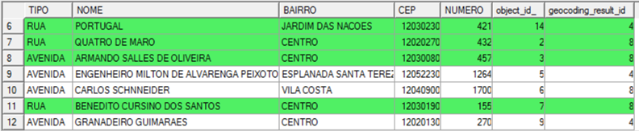

to select a DBF file and configure the fields that represent address
attributes.
to select a DBF file and configure the fields that represent address
attributes.- to
select the output
directory and also inform the new layer name to store the result, or
 to select the Data
Source.
to select the Data
Source.
| Shape composed by lines representing streets and a shape composed by points representing the found addresses. |
|  |
| Table representing the found addresses. |
to select a DBF file and configure the fields that represent address
attributes.to
select the output
directory and also inform the new layer name to store the result, or to select the Data
Source.